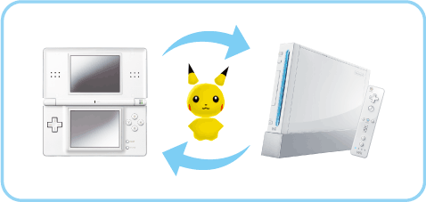
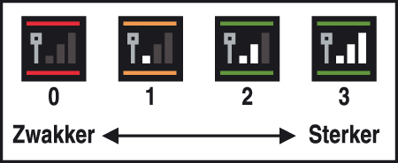

12 |
Vereisten voor een verbinding met de DS |
 |
Om Pokémon uit Pokémon Diamond of Pokémon Pearl over te brengen moet je aan de volgende voorwaarden voldoen:
■ Wat heb je nodig? ● Een Nintendo DS of Nintendo DS Lite ● Een Nintendo DS Pokémon Diamond of Pokémon Pearl Game Card Opmerking: de internationale versie van de Pokémon Diamond of Pokémon Pearl Game Card kun je niet gebruiken. 
Richtlijnen voor draadloze communicatie
Houd rekening met het volgende tijdens draadloze communicatie.
● Het ● Tijdens de draadloze communicatie verschijnt er een -icoontje in beeld waarmee de sterkte van het draadloze signaal in vier verschillende niveaus wordt aangegeven. 
Opmerking: het aan/uit-lampje knippert snel tijdens het gebruik van draadloze communicatie. ● Volg deze richtlijnen voor de beste resultaten bij het gebruik van draadloze communicatie. ・ Houd het Nintendo DS-systeem binnen een afstand van ongeveer 10 meter ten opzichte van het Wii-systeem, of zorg dat de signaalsterkte op twee of meer balkjes blijft staan voor het beste resultaat. ・ Voorkom dat er zich personen of andere obstakels tussen het Nintendo DS-systeem en het Wii-systeem bevinden, om interferentie te voorkomen. ・ Als de communicatie wordt gestoord door apparaten die elektrische interferentie kunnen veroorzaken (zoals magnetronovens of draadloze apparaten), moet je het |
 |
 |
 |